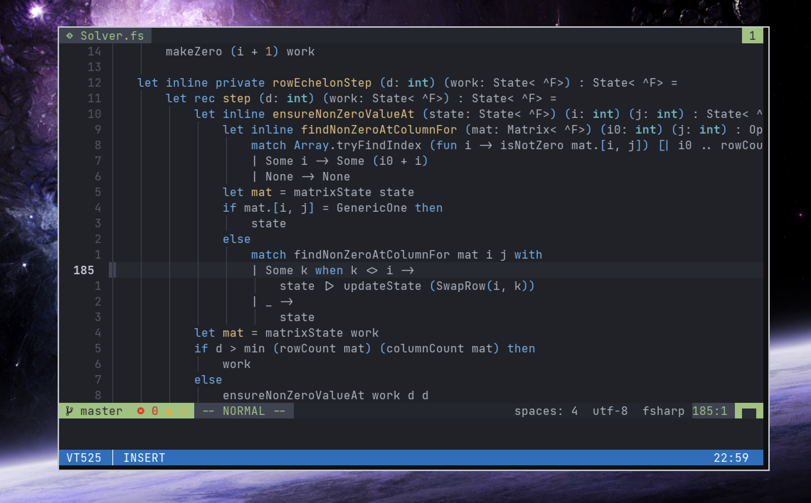
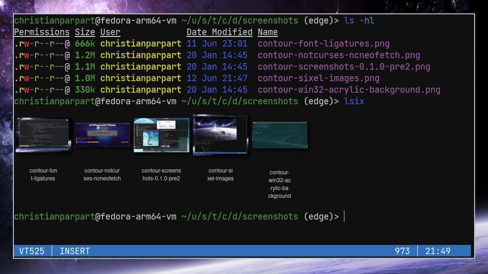
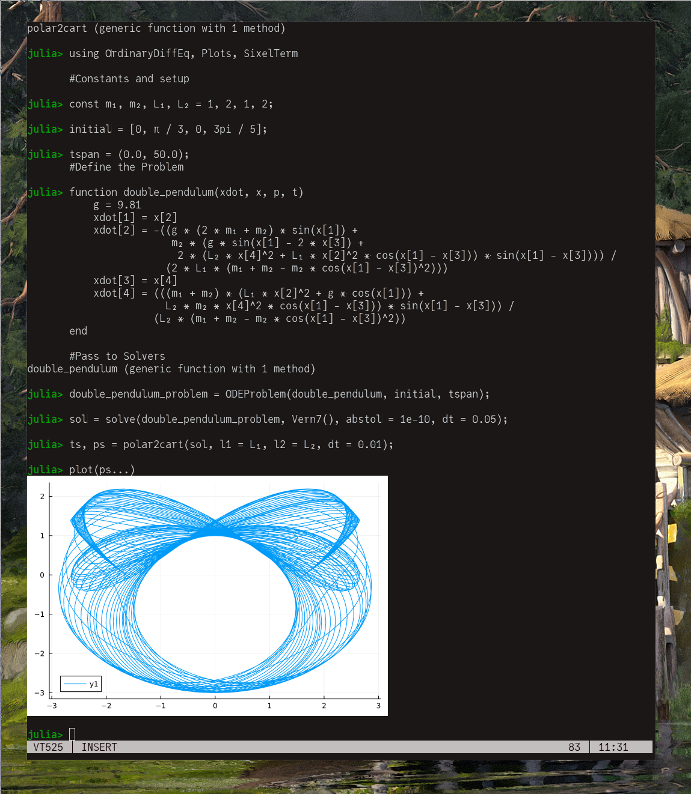

Features#
Everything Contour does, grouped by what you do with it. A card with a link opens its guide.
Window and sessions#
- Persistent sessions Daemon mode: sessions survive the window, reattach locally or over the network, and interoperate with tmux in both directions.
- Workspace sidebar Workspaces, tabs and panes as a tree.
- Remote hosts Attach to sessions on another machine.
- Quick terminal A global hotkey slides a terminal down from the top of the screen.
- Tabs and split panes Colored tabs, tab badges and drag-and-drop rearranging of panes and tabs.
- Layouts Named sets of tabs and panes that open together.
- Drag and drop Drop a tab on a pane edge to split it, or files to type their escaped paths.
- Native window chrome Windows 11, macOS and Linux, in light and dark, with a Settings window, a command palette and a character-cell Terminal style.
- Cross-platform Linux, macOS, FreeBSD, OpenBSD and Windows.
- GPU-accelerated and high-DPI GPU-accelerated rendering with high-DPI support.
- Find bar A live match count, floating over the pane being searched.
- Runtime configuration reload Change the configuration and see it without a restart.
- Key binding customization
- Color schemes and profiles A profile groups a color scheme, a login shell and related behaviors.
- Transparent background Blurred behind the window on Windows 10 and on KDE; a blurrable background image is supported too.
- Read-only mode Protects the running application from accidental input, such as Ctrl+C.
Text and graphics#
- Font ligatures Rendered out of the box, when your font has them.
- Unicode Colored emoji, including ZWJ, VS15 and VS16 sequences, and grapheme clusters: 🌈 💝 😛 👪
- Bold and italic fonts
- Nerd Font glyphs Powerline, Font Awesome, Material Design, Devicons and more, with whichever font you choose: a symbols font is bundled.
- 256-color and Truecolor
- Images Sixel, kitty graphics and ReGIS vector graphics.
- Input method editor Emoji and pinyin input through ibus.
- Size indicator The terminal size appears while you resize the window.
- Status line VT320 host-programmable and indicator status line.
- Text reflow Lines re-wrap when the window resizes; configurable via
SM ? 2028/RM ? 2028. - Synchronized rendering
SM ? 2026/RM ? 2026. - Progress bar A built-in Fira Code inspired progress bar.
- Clickable links URLs, file paths and your own patterns in whatever a program prints, opened with Ctrl+click; hyperlinks via OSC 8. See links.
- Clipboard Set the clipboard and primary selection via OSC 52, advertised as the Clipboard Extension (
DA152).
Working in the scrollback#
- Command blocks Exit-status gutter, line numbers, per-line timestamps, folding, scrollbar marks and a sticky command header.
- Restored sessions History comes back above a "Restored" divider, with one toast saying what was restored.
- Finish notifications Know when a long-running command finishes in a tab you are not looking at.
- Shell integration For bash, zsh, fish, tcsh and PowerShell; Contour offers to install it for bash, zsh and fish, showing the one line it adds, also in Settings.
- Vi-like input modes Navigation, selection, copy and paste from the keyboard.
- Hint mode Keyboard-driven selection of URLs, file paths, git hashes and more.
- Line marks Vertical markers: jump quickly between marks in your history.
- Buffer capture A VT extension to quickly extract the terminal page's contents.
Automation#
- Control API
contour ls,new,split,send,pane captureandblockscript the daemon's workspaces, tabs, panes and command blocks. - MCP server
contour mcplets coding agents such as Claude Code and Codex split panes, run commands and read their output in their own tab. - Status-line extensions Sandboxed WebAssembly extensions that draw in the status line.
Font ligatures#
Contour renders your font ligatures out of the box. If your font supports them, Contour will render them.

Images#
Contour implements first-class Sixel image support, as well as the kitty graphics protocol and ReGIS vector graphics.
Most notably supporting libraries, are notcurses and libsixel.
Also, libsixel does provide a CLI to convert well known image formats (like PNG) to Sixel format and have them printed to the terminal.


Input method editor#
An input method (or input method editor, commonly abbreviated IME) is an operating system component or program that enables users to generate characters not natively available on their input devices by using sequences of characters (or mouse operations) that are available to them. Using an input method is usually necessary for languages that have more graphemes than there are keys on the keyboard. More info can be found on wikipedia and with more info how to setup it and use here wiki.archlinux
Example of emoji input using ibus#
List of emoji from unicode
You can insert any unicode character using ibus IME by pressing Ctrl+Shift+u (default) and then insert unicode code for the emoji or other character.
Example of input using pinyin via ibus#
Size indicator#
On resize window with current terminal size will appear